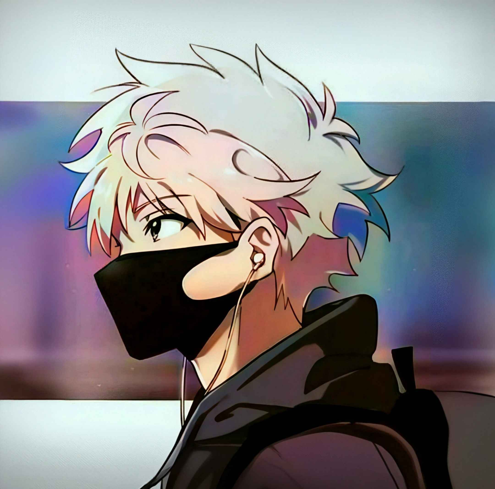

|
Welcome to my little corner of the internet! I'm someone who finds joy in exploring every depth of life, always pushing the limits, and always curious about what the world has to offer. Originally from the vibrant city of Istanbul, I now reside in the beautiful coastal city of Antalya, Turkiye. I have a passion for the arts, whether it's creating music on my guitar, immersing myself in creative projects, or simply appreciating the beauty around me. My personality is rooted in optimism, and I approach life with a realistic yet cheerful attitude. Whether it's a friend or a stranger passing by, I believe in the power of making the world a better place for those around me. The moon always fascinates me, its silent glow lighting up the night sky with a sense of mystery. I often find peace beneath its beams, lost in its beauty and serenity. On the other hand, I have a bitter relationship with the sun, as its harsh light and heat are a stark contrast to my love for the cool, calming sky and the gentle clouds that float freely across it. Some quick facts:
×
Adblock detectedIf website looks wrong or buggy, please disable your adblocker! This is my personal site and it has no real ads but it's script-heavy and things can break with it on.
Systems status: OK
THE WISE
|

Stars
✩ Home ✩ TO BE WRITTEN ✩ TO BE WRITTEN ✩ TO BE WRITTEN ✩ TO BE WRITTEN ✩ TO BE WRITTEN ✩ TO BE WRITTEN <-- join!! ✩ TO BE WRITTEN ✩ TO BE WRITTEN ✩ TO BE WRITTEN ✩ TO BE WRITTEN ✩ TO BE WRITTEN ✩ TO BE WRITTEN  ✩ TO BE WRITTEN  ✩ TO BE WRITTEN 
I'm
Alive!
Loved song:

✧ Favourite Quote:
 Zaid • ☪"Be who you are and say what you feel, because those who mind don't matter, and those who matter don't mind." |